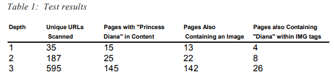
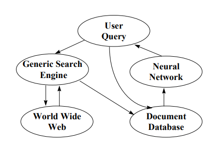

URL Extractor module when a query needed to be initiated on the Web. Results from a
query of the Web were loaded into the database, and the SQL module was initiated to
issue the query on the Database module. Figure 3 shows the SQL query used by the
system to find all pages mentioning “Princess Diana” that contain an image and contain
the text “Diana” inside the image tags.
The URL Extractor module initiated the search of the World Wide Web. Initially,
the module received the user-specified starting URL from the SQL module. The search
was initiated by invoking the HTML Parser module that scanned the Web document at
the starting URL. The URL Extractor module then captured all the links from the Web
document scanned by the parser. These new links were then passed, one-by-one, to the
HTML parser, and the scan/extract process repeated itself. Each time the URL extraction
process was started, the URL extractor module was able to identify duplicate URLs. All
duplicates were simply discarded by the Extractor module, thus eliminating redundant
scans as well as cycles. In addition, URLs containing complex query strings were also
discarded. However, the Extractor module was able to recognize relative, absolute, and
local links, and properly structure them for the Parser module
The HTML parser was responsible for retrieving documents on the Web. In
addition, the HTML parser also scanned each retrieved document and determined
whether the document satisfied the user’s query. If a document did satisfy the user query,
it was passed to the loader module. If it did not, then the document was discarded after
its links had been extracted by the URL Extractor module. The Parser module utilizes the
built-in parser provided with Microsoft Internet Explorer 4.0. The Loader module
extracted the relevant content and presentation information from the Web document that
it received from the HTML parser module. This information was then populated in the
Web-Database module
Johnson, Fotouhi & Draghici

Included in the results is the total number of unique URLs scanned and, from those
URLs, the Web documents containing the text “Princess Diana.” In addition, from this
set of documents, the number of documents containing an image and the documents
having the text pattern “Diana” within the image tags is also shown. Clearly, it can be
seen from the results that a significant reduction in the number of Web pages selected
can be observed.
The concept of querying the Web by content, link, and particularly structure was
studied extensively with the CLaP system, and the system did provided promising results
when comparing straight keyword searches and searches that utilized structure informa�tion. However, the query process was quite cumbersome to the users, as they were
required to specify details about exactly where each search word in which they were
interested would appear. Due primarily to this reason, as well as some other issues,
another query-by-structure approach was needed.
A Neural Network Net Query-by-Structure Approach
Continuing the research into a query-by-structure approach, two new systems
designed to capture and utilize structure information and content during a distributed
query were developed. Both systems employ neural networks to organize the information
based on relevancy of not only the content but the structure of the document as well.
The primary goal of these systems was to test the feasibility of using neural networks
to improve the query process. In addition, in order to become a viable querying system,
the requirement of an extensive amount of information required of the user during the
query process, such as in the CLaP system, needed to be resolved. Hence, another goal
in the development of the neural network query-by-structure systems was to eliminate
the need for the complex user queries.
The first issue that needed to be addressed was determining which type of neural
network to utilize. For example, some types of neural networks, when provided a specific
input, will identify which of a set of prototypes the input most closely matches. These
types of neural networks are called supervised learning networks. Systems utilizing
supervised learning neural networks could be useful in categorizing semi-structured
documents based on how the structure of one document most closely matches the
structure of other classified documents. Additionally, these types of neural network,
when given a set of documents as input, can be utilized to identify document relevancy
and quantify the results so that a ranking of documents can be obtained. However, to
effectively perform the classification, it is necessary for systems utilizing supervised.effectively perform the classification, it is necessary for systems utilizing supervised.learning networks to create a set of prototype vectors corresponding to the predetermined set of prototypes.
When a predetermined set of prototypes is not available, a different type of neural
network, namely unsupervised competitive networks, can be utilized. Unsupervised
competitive neural networks utilize only the inputs and attempt to group together or
cluster the inputs into related classes. By performing the classification based on
document structure, documents with similar structure will be clustered together. Ad�ditionally, the results yielded from this approach can be used in different fashions. One
approach could be to deem the largest cluster the most relevant cluster, with the notion
being that several documents of similar structure are likely more useful. Another
approach could be to present the user with the groupings of clusters and allow him or
her to select which documents to view, based on his or her opinion of the most relevant
clusters. This approach provides the user with more flexibility, especially in light of the
fact that ultimately it is the user who determines relevancy. But, it may not do as much
in terms of reducing the number of relevant documents. So, it seems worthwhile to study
both approaches, as it is likely that a hybrid of the two might serve best.
Neural Network Net Query-by-Structure Systems
Overview
Although similar, the systems developed utilize different types of neural networks:
a supervised Hamming Network and an unsupervised Competitive Network (Hagan,
Demuth, & Beale, 1996). The query process for both systems involves five steps (as
shown in Figure 4)
Figure 4: Neural network query-by-structure process.

Johnson, Fotouhi & Draghici
First, the user initiates a query to the User Query module by entering a standard
generic search using keywords. In order to limit the number of Web documents that must
be retrieved and parsed during a dynamic Web query, the user must also select a maximum
number of URLs he or she wishes to receive in the results. Additionally, the supervised
neural network system requires that the user select a document type. This type field is
used by the system to categorize document structure. Upon issuance of a user query,
the Generic Search engine module simply performs a standard Web search with the search
words provided by the user using a commercial search engine. Any commercial search
engine that produces results containing the URLs and descriptions of relevant documents can perform this operation.
Although these results are actual documents on the Web, the only Web query
performed at this point was to contact the commercial search engine, which in turn simply
performed a query on its local database. As a result, in order to capture document
structure information, it was necessary to actually retrieve each of the Web documents
specified in the results of the Generic Search Engine query. Hence, the Generic Search
Engine module takes the list of URLs returned by the commercial search engine, and one
at a time, retrieves the source code of each of the Web documents. These documents
are then parsed in order to analyze the document structure.
For each Web document, document structure was quantified by creating a feature
vector based on whether specific words appeared between specific HTML tags in the
Web document’s source code. The words selected are words deemed relevant to one
of the document types specified in the initial user query. As an example, consider that
a resume document, regardless of the creator’s occupation, will likely contain several of
the following words: business, education, experience, objective, title, and work. Potentially more significant is the fact that these words will likely be highlighted in the
document by specific HTML tags, such as bold (), heading (), font (),
and italics (). Hence, the feature vector would contain an entry for each of the resume
words, and if any of those words appeared at least once between any one of the specified
HTML tags, a 1 would be placed in the feature vector for that word, and a 0 otherwise.
It should be noted that most of the entries in the feature vector should be 0’s because
the feature vector will contain entries for several other words (recall that WebWatcher
utilized a 530-element feature vector) for other document types that are not expected to
appear in a resume document. This feature vector was then used as the input vector to
the neural networks.
After construction, the document feature vectors are added to the Document
Database module. This allows future user queries to be initiated directly to a database
that already has captured document structure information, hence bypassing the timeconsuming Web query. In addition, the feature vectors are then sent to the Neural
Network module. Both systems then employ their respective neural network to organize
the information based on relevancy of not only the content but the structure of the
document as well. Lastly, the neural network outputs the results of the user query.
The following two sections describe in greater detail the supervised Hamming
neural network and the unsupervised Competitive network. This book is not designed
to be a text about neural networks, so the objective here is simply to provide a high-level
description of the networks utilized by the query-by-structure process. Readers
unfamiliar with neural networks should note that most neural networks are simply a series
of mathematical manipulations performed on a set of vectors and matrices.
Hamming Neural Network
A Hamming neural network is a supervised learning network that consists of two
layers (Hagan et al., 1996). The first layer (feedforward layer) performs a correlation
between an input vector and a set of prototype vectors and produces the output a1 (the
superscript indicates the network layer) as described by the following formula:
a1=purelin(W1p+b1) (3.1)
In formula (3.1), W1 is called the weight matrix. Each row in the weight matrix
represents one of the prototype vectors. The weight matrix is multiplied by the vector
p, which represents an input vector. The resultant vector is then added to the bias vector
b1 to produce the output vector a1
. The purelin transfer function in the formula above is
simply a linear function that produces the same output as its input.
The second layer (recurrent layer) performs a competition to determine which of
the prototype vectors is closest to the input vector using the following formulas:
a2(0)=a1 (3.2)
a2(t+1)=poslin(W2a2(t)) (3.3)
The initial input to the recurrent layer is show in (3.2), and is simply the output, a1
,
from layer 1. The recurrent layer also has a weight matrix W2
. This matrix is constructed
so that each element on its diagonal has a value of 1 and all remaining elements have a
value of of -ε(where of -ε is some number less than 1 / (S - 1), and S is the number of
rows in the weight matrix. Hence, the recurrent layer repeatedly multiplies the weight
matrix by the a2
vector calculated in the previous iteration. Note that in this formula, the
poslin linear transfer function is applied and produces linear results for positive values
in the matrix and zero for negative values. The recurrent layer continually applies this
function until every element but one in the resultant vector contains a zero. This nonzero
ith
element represents that the initial input vector provided to the feedforward layer most
closely matches the ith
prototype vector.
A Hamming neural network is considered supervised because the prototype
vectors are determined in advance and are designed to resemble the expected input
vectors. Hence, the first step in designing the Hamming network for the query-by structure system was to initialize the prototype vectors. Each prototype vector was
designed so that each element in the vector would contain a Boolean value indicating
whether a given word appeared between a given HTML tag or not. Since each prototype
vector represented a different document type, if a specific word was expected to appear
within a given structure context inside that specific type of document, the value of that
entry was set to one, and if not, the value was set to zero. For instance, using the example
from the previous section, the resume prototype vector would be a vector that contained
all 0’s except for the entries that represented the resume words.
After initialization of the prototype vectors, the approach taken by the supervised
neural network query-by-structure system was to slightly modify the Hamming neural
network. First, the system performs the correlation between each of the input vectors
and the prototype vectors, one at a time. Here, the number of input vectors (n) is